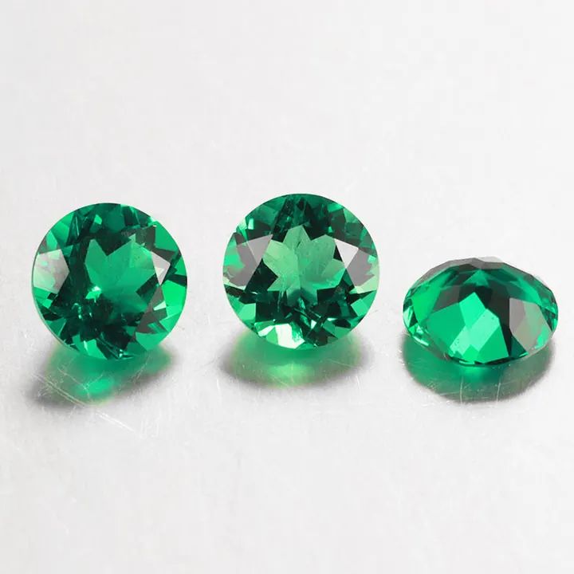

祖母綠的選購與保養：脆弱的美人
祖母綠是寶石界的嬌貴美人——買她要看五件事，養她要守三條鐵律。

核心定義
買祖母綠，核心順序是：顏色第一、注油程度第二、克拉第三、淨度第四、證書第五。祖母綠的價值以「綠」為王，顏色達標後，再看「油」的誠實與否——這決定價格與耐久。
保養方面，祖母綠是寶石界出了名的「嬌貴美人」：硬度 7.5–8 不算低，但裂隙多、韌性差，怕碰撞、怕高溫、怕化學品——日常守護，比買它更重要。
特徵與分類
| 選購考量 | 重點 | 說明 |
|---|---|---|
| 顏色 | 濃綠明亮 | 豔而不黑、亮而不淡 |
| 注油 | 輕微為佳 | Minor 普遍接受 |
| 克拉 | 1ct 以上 | 大克拉稀有 |
| 淨度 | 花園不影響美觀 | 深裂縫要小心 |
| 證書 | 權威機構 | GIA/SSEF/Gübelin |
保養鐵律三條：不戴著做家事與運動（防撞）；遠離高溫與超音波清洗機（油會被震出、裂縫會擴大）；用溫水與軟刷輕洗、避免化學清潔劑。定期檢查鑲爪與重注油，是祖母綠珠寶的例行保養。
科學原理
祖母綠「嬌貴」的科學：裂隙多（地質應力）＋硬度不算頂級（7.5–8）＋注油怕熱怕震——它的耐久度是「物理結構＋處理狀態」的綜合體。超音波震動會把油震出、讓裂隙擴大；高溫會讓油老化、樹脂變色。
選購的科學：顏色要在標準光源下評估（避免黃光誤導）；注油程度看證書（None/Minor/Moderate/Significant）；淨度用十倍放大鏡檢查深裂縫是否影響結構。
鑑定與鑑別方法
- 自然光與白光下看顏色濃淡
- 十倍放大鏡查深裂縫與內含物
- 確認注油程度（證書）
- 核對權威證書與實物
- 高價品要求產地鑑定
市場行情與保養建議
行情趨勢：祖母綠價格穩步走高，頂級無油哥倫比亞祖母綠屢創拍賣紀錄；贊比亞祖母綠是性價比主流。投資級祖母綠的條件：顏色濃豔＋無油或輕微注油＋權威證書＋產地可追溯。
最終提醒：祖母綠是「戴的藝術品」——買你真心喜愛、看得懂其美的那顆，用對的方式養護它。價值與美，會在時間裡互相成全。
常見誤區
絕對不行。祖母綠怕撞、怕化學品、怕溫差——游泳（氯）、家事（清潔劑）、運動（碰撞）都是風險。她是美人，需要呵護。
超音波會震動裂隙、震出油——對注油祖母綠是災難。祖母綠只能溫水軟刷，不能進超音波機。
冷知識
油會隨時間蒸發或老化，珠寶商會定期為注油祖母綠「補油」——就像給木地板打蠟，這是祖母綠特有的保養儀式。
劇烈溫差會讓裂隙擴張、寶石裂開。戴祖母綠泡溫泉、進烤箱環境，都是在賭運氣。
反直覺觀點
祖母綠的坑（注油程度、合成、產地）都藏在細節裡——權威證書是唯一可靠的驗證。多花一點錢買證書，省下的是幾倍的踩雷成本。
頂級祖母綠的稀有度支撐價格；異常便宜的「祖母綠」，多半是合成、重度充填或仿品。價格的異常，永遠是警訊。